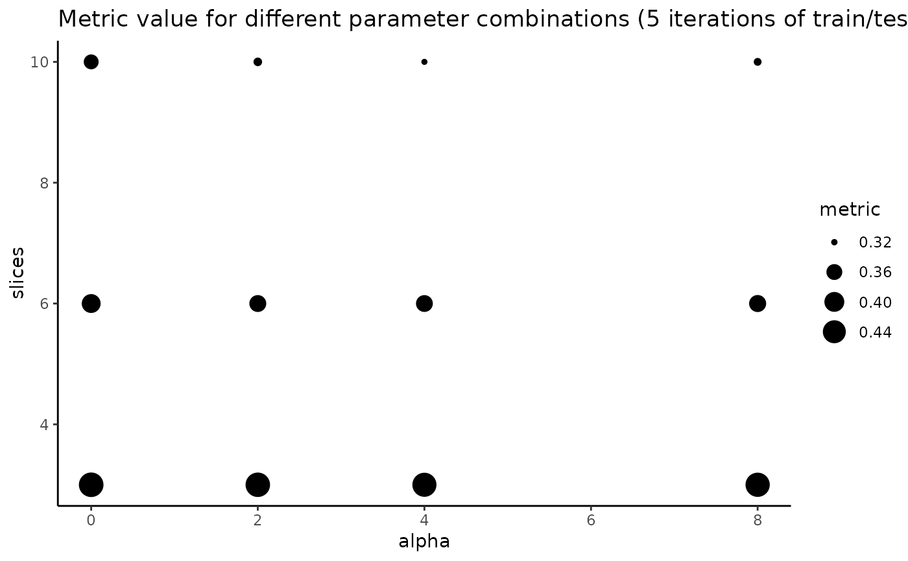

This function is used to select the optimal values for parameters slices and alpha in weighted sliced inverse regression based on your provided gene expression data and corresponding spatial coordinates. For a given evaluation metric, it will visualise the performance of WSIR with varying function parameters based on your data, and return the optimal pair. This pair of slices and alpha can be used for your downstream tasks.
Arguments
- exprs
matrix containing normalised gene expression data including n cells and p genes, dimension n * p.
- coords
dataframe containing spatial positions of n cells in 2D space. Dimension n * 2. Column names must be c("x", "y").
- samples
sample ID of each cell. In total, must have length equal to the number of cells. For example, if your dataset has 10000 cells, the first 5000 from sample 1 and the remaining 5000 from sample 2, you would write samples = c(rep(1, 5000), rep(2, 5000)) to specify that the first 5000 cells are sample 1 and the remaining are sample 2. Default is that all cells are from sample 1. Sample IDs can be of any format: for the previous example, you could write samples = c(rep("sample 1", 5000), rep("sample 2", 5000)), and the result would be the same.
- alpha_vals
vector of numbers as the values of parameter alpha to use in WSIR. 0 gives Sliced Inverse Regression (SIR) implementation, and larger values represent stronger spatial correlation. Suggest to use integers for interpretability, but can use non-integers. Values must be non-negative.
- slice_vals
vector of integers as the values of parameter slices to use in WSIR. Suggest maximum value in the vector to be no more than around \(\sqrt{n/20}\), as this upper bound ensures an average of at least 10 cells per tile in the training set.
- varThreshold
numeric proportion of variance in
t(X_H) %*% W %*% X_Hto retain. Must be between 0 and 1. Default is 0.95. Select higher threshold to include more dimensions, lower threshold to include less dimensions.- maxDirections
integer for the maximum number of directions to include in the low-dimenensional embedding. Default is 50.
- metric
evaluation metric to use for parameter tuning. String, either "DC" to use distance correlation or "CD" to use correlation of distances. Default is "DC".
- nrep
integer for the number of train/test splits of the data to perform.
Value
List with five slots, named "plot", "message", "best_alpha", "best_slices" and "results_dataframe".
"plot" shows the average metric value across the nrep iterations for every combination of parameters slices and alpha. Larger circles for a slices/alpha combination indicates better performance for that pair of values.
"message" tells you the parameter combination with highest metric value.
"best_alpha" returns the integer for the best alpha values among the values that were tested.
"best_slices" returns the integer for the best slices value among the values that were tested.
"results_dataframe" returns the results dataframe used to create "plot". This dataframe has length(alpha_vals)*length(slice_vals) rows, where one is for each combination of parameters slices and alpha. There are 3 columns, named "alpha", "slices" and "metric". Column "alpha" includes the value for parameter alpha, column "slices" includes the value for parameter slices, and column "metric" includes the value for the specified metric, either Distance Correlation ("DC") or Correlation of Distances ("CD").
Examples
data(MouseData)
explore_params = exploreWSIRParams(exprs = sample1_exprs,
coords = sample1_coords,
alpha_vals = c(0,2,4,8),
slice_vals = c(3,6,10))
explore_params$plot

explore_params$message
#> [1] "Optimal (alpha, slices) pair: (8, 3)"
best_alpha = explore_params$best_alpha
best_slices = explore_params$best_slices
wsir_obj = wSIR(X = sample1_exprs,
coords = sample1_coords,
optim_params = FALSE,
alpha = best_alpha,
slices = best_slices)